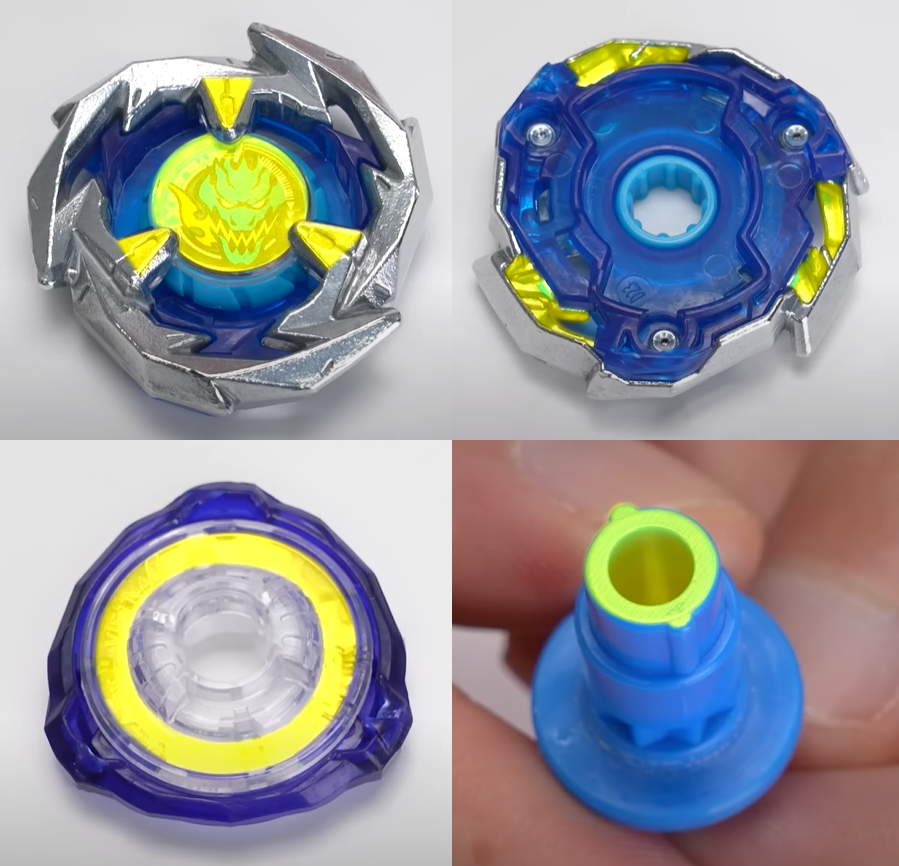

陀螺改裝
禁止於部件接觸部分或陀螺與發射器接觸部分作塗裝或貼上貼紙，亦不能重疊地貼上貼紙，或作任何其他改變性能的塗裝。
若希望辨認自己的部件，可於例如以下地方以筆加上標記：
預備對戰
若要選定於對戰盤左或右側發射，將會以如猜拳等公平方法決定。直到與對手分出勝負前都不能轉換位置。
對戰盤主要的陀螺活動範圍為「Battle Zone」，兩角的小出口為「Over Zone」，之間的大出口為「Xtreme Zone」。

對戰得分
- Xtreme Finish (XF)：陀螺從「Xtreme Zone」離開對戰盤並未有再返回。得 3 分。
- Over Finish (OF)：陀螺掉入「Over Zone」並未有再返回對戰盤。得 2 分。
- Burst Finish (BF)：陀螺任何部件脫落。得 2 分。
- Spin Finish (SF)：陀螺原先迴轉方向的迴轉速度降至 0。得 1 分。
當任何一陀螺較早發生以上情況，對方就可得分。先取四分為勝。
若陀螺於發射口離開並未有返回，則需重賽。
難解情況
若自己陀螺先停轉再被擊出，對方獲 SF 一分。
若自己陀螺先被擊爆再被擊出，對方獲 BF 兩分。
若自己陀螺先被從 Xtreme Zone 離開再因碰撞對戰盤爆裂，對方獲 XF 三分。
若自己陀螺被擊爆，反彈力令對方陀螺被擊出，對方獲 BF 兩分，因被擊爆時一刻對方陀螺仍未離開對戰盤。
若自己陀螺被擊至 Over Zone 但仍在轉動，然後對手陀螺於 Battle Zone 先停下，自己陀螺隨後亦停下，對方獲 OF 兩分。
若自己陀螺被擊至 Over Zone 但仍在轉動，然後對手陀螺於 Battle Zone 先停下，其後自己陀螺彈回對戰盤，自己獲 SF 一分。
XF 及 OF 發生後需要未有
若發生 Reverse 情況，XF 及 OF 事件將被取消。